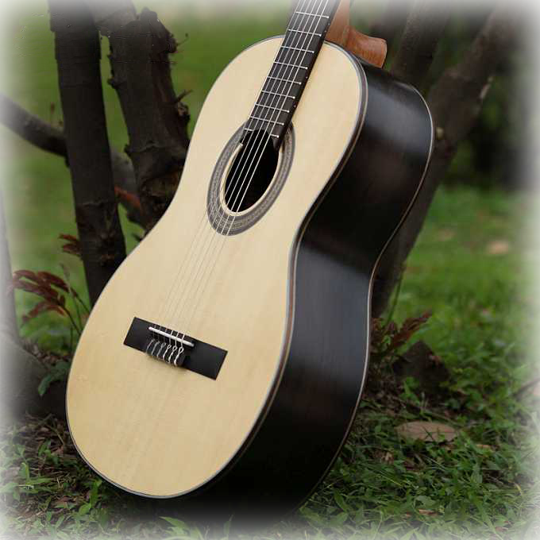

原名古典6弦琴。和竖琴（古典23弦琴、古典46弦琴等）、lute琴等同属古典琴大类。可以独奏、重奏，与交响乐队协奏等等。是吉他家族中艺术性最高，适应面最广，最有深度，最受艺术界肯定的一类，被称为“世界三大经典乐器”（另外两种是钢琴，小提琴），其同时具备钢琴的富丽堂皇与小提琴的优雅婉转，又有“乐器王子”之称；古典吉他早已经成为一种国际化的正规乐器，并不像弗朗明哥吉他只局限于演奏西班牙民族音乐。年龄较小或音乐天赋较高的孩子学吉他就应当学习古典吉他，只有古典吉他才具有与钢琴、小提琴并驾齐驱的地位。它的演奏姿势严格，技术也是最为规范和深奥的。
